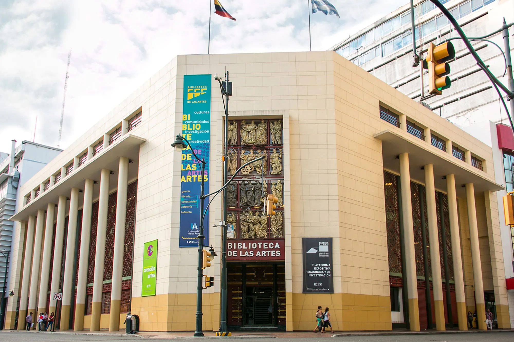
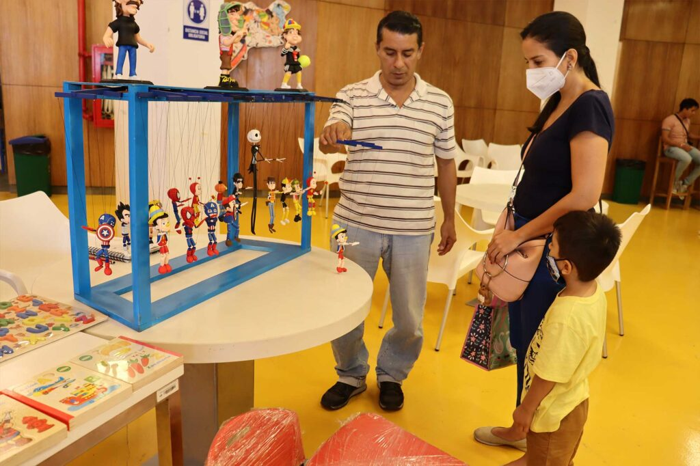

Biblioteca de las Artes y Sala Ría
Un espacio público para las artes y la cultura en el centro de Guayaquil.
Quiénes somos
La Biblioteca de las Artes pertenece a la Universidad de las Artes (UArtes) y funciona en un edificio patrimonial del centro de Guayaquil. Abrió al público general en enero de 2019 con un fondo de alrededor de 40 000 libros especializados en arte y cultura.
Es una biblioteca, pero también un lugar de encuentro: salas de lectura, estudio colaborativo, cine, talleres, exposiciones y charlas abiertas a la comunidad.

Sala Ría

La Ría es el espacio infantil de la biblioteca, en la planta baja: cerca de 800 m² pensados para la lectura, la música, la creación y la educación artística de niñas y niños, con escenario, mediateca y biblioteca propia.
Allí se realizan talleres como Un hilo, dos generaciones, funciones de Cine Kids y jornadas del Baúl Literario y Artístico.
Qué encuentras
- Préstamo de libros y de equipos, y acceso a ciber.
- Zonas de estudio, lectura e investigación.
- Sala Ría para familias, con talleres, cuentos y cine infantil.
- Cine abierto, talleres y charlas para jóvenes y adultos.
Ubicación y contacto
Cómo llegar
Calle Pichincha y Aguirre, en el centro de Guayaquil.
Los horarios cambian según la actividad: antes de visitarnos, consúltalos en nuestras redes.